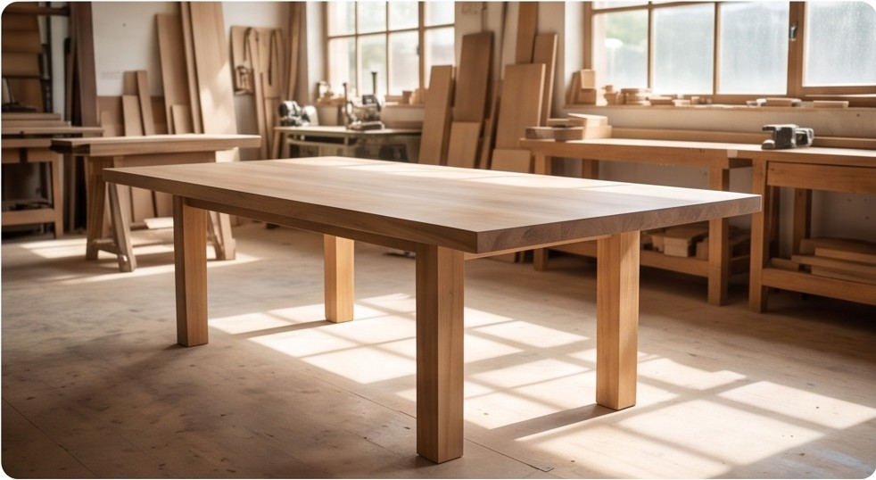
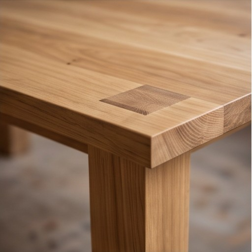
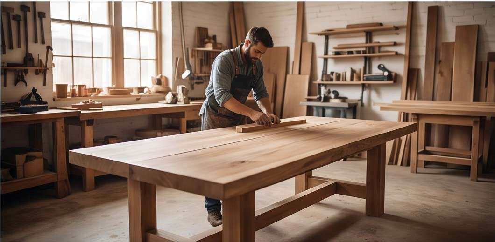

Campagna
Pagina 2 di 2 · prima dell'invioOgni volta che serve un nuovo periodo di pubblicazioni: durata, canali, descrizione e foto a gruppi (sezioni 10 e 11), poi il riepilogo con un unico invio all'operatore. Il profilo si compila nella pagina Profilo bottega (sezioni 1–9).
Bentornato, Mario
La pagina Campagna si apre con questo riepilogo del profilo già salvato. Chi non ha ancora un profilo viene portato prima alla pagina Profilo bottega.laboratorio-1.jpg, laboratorio-2.jpg. Tienine conto nella nuova campagna: foto e testi vanno inseriti di nuovo (ADR-40).
- Bottega
- Falegnameria Bianchi
- Referente
- Mario Bianchi
- Tipo di prodotto
- Legno e mobili
- Obiettivo
- Farmi conoscere
- Canali preferiti
- Facebook, Instagram
10 · Durata e canali · Di che campagna si tratta
Ogni volta che si arriva fin qui si sta preparando un nuovo periodo di pubblicazioni: nome, inizio, fine e i canali su cui esce.11 · Foto della campagna · Le foto di questo periodo
Le foto si caricano a gruppi: da 1 a 20 foto per gruppo, con una descrizione. I post nascono dai gruppi. Per inviare servono almeno 4 foto caricate in tutto (ADR-59, ADR-60).
★tavolo-rovere-01.jpg
☆tavolo-rovere-02.jpg
☆laboratorio-1.jpg★ = "da usare per forza": se la foto è buona esce di sicuro in un post. Le altre le sceglie il sistema tra le migliori del gruppo (ADR-64).
Un gruppo è di foto caricate oppure di immagini da creare, mai misto. Le immagini create si aggiungono alle foto, non le sostituiscono: le 4 foto caricate servono comunque. Senza questo gruppo, se serve un'immagine creata è una frase o una riflessione sul tuo mestiere, mai un prodotto.
12 · Riepilogo · Rivedi prima di inviare
Ultimo controllo prima dell'invio. Da qui si torna alle sezioni 10 e 11; i dati del profilo sono in sola lettura e si cambiano nella pagina Profilo bottega.Identità
- Bottega
- Falegnameria Bianchi
- Referente
- Mario Bianchi
- Città
- Bra (CN)
Prodotti e pubblico
- Tipo di prodotto
- Legno e mobili
- Obiettivo
- Farmi conoscere
Logistica
- Ritmo scelto
- 3 a settimana per canale · con due canali 6 post a settimana
Durata e canali
- Nome campagna
- Campagna Ottobre 2026
- Periodo
- 2026-10-01 → 2026-10-31 · 31 giorni
- Canali
- Facebook, Instagram
- Post chiesti
- 13 per canale
Foto della campagna
- Foto caricate
- 6 foto in 3 gruppi · 1 con la stella
- Immagini da creare
- 2, in 1 gruppo
Che cosa uscirà · stima
- 13 post · 6 con le foto di questa campagna · 2 con foto d'archivio mai uscite · 5 riempitivi: le tue 2 immagini da creare, 2 foto già uscite, 1 cartolina
- 13 post · 6 con le foto di questa campagna · 7 con foto d'archivio, su Instagram mai uscite
È una stima: quali foto sono buone lo dice l'analisi, dopo l'invio. Lo stesso riquadro in altri due casi. Archivio vuoto, prima campagna con 6 foto e senza immagini da creare: "13 post per canale: 6 con le tue foto, 7 tra cartoline e immagini con una frase sul tuo mestiere. Sono più della metà: con 9 foto scendono a 4." Foto in più dei post scelti: "Le foto che non escono restano nel tuo archivio per le prossime campagne. Vuoi pubblicare di più? Passa a 5 a settimana."
Altro avviso che non blocca: frequenza alta rispetto alle foto che dichiari nel profilo. Gli avvisi arrivano dal server (ADR-73). Blocchi, con il campo evidenziato: meno di 4 foto caricate; un gruppo senza descrizione; un canale non più collegato ("Instagram non è collegato: contatta il consorzio").
Schema statico, non interattivo (v5.5, ADR-47, ADR-57…70 e ADR-81…88): mostra in sequenza tutte le schermate della pagina con dati di esempio. Non salva né valida nulla — è lo scheletro da cui costruire la pagina reale nel software.